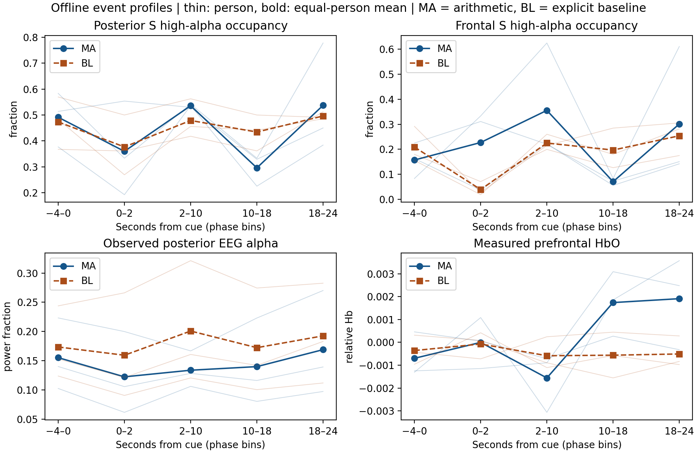
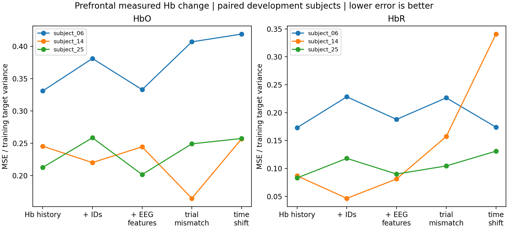

EEG 用 d64/K8192，Hb 用 d128/K1024。两秒一个整数，编码上下文为 30 秒。四库读出使用 60 名训练被试和 16 名普通开发被试。心算实验使用 Single-Trial 中可与两套原始事件时钟对齐的子集。
联合 S/O 比只用 S 预测实测 EEG α 占比的误差低 1.64%。HbO 斜率对应的误差降幅为 40.80% 和 37.29%。Hb-S 三词计数在同窗内相对一阶转移与停留模型的收益为 6.30% 和 13.27%，在下一不重叠窗口则为 -1.34% 和 +0.36%。
事件主对照纳入 122 个同会话成对条件试次，心算相对显式基线的提示后占用增量为 +8.51 个百分点，精确双侧 p=0.50。在 107 个可完成全部错配对照的开发试次上，加入 EEG 词后，实测 Hb 的双色宏 NMSE 从 0.18861 升至 0.20872。两项事件检验均只有 3 名独立开发被试。
属性为 EEG 的 8–13 Hz 功率占 1–45 Hz 的比例，或 HbO 两秒线性斜率。逐词预测相应 S/O 监督分量的属性。背景为库、位置和可见 X 幅度档。训练支持至少 20 片、3 人，逐词的背景残差按 16 片收缩。在至少 3 名开发被试出现、平均误差有改善且严格多数人改善时，计入覆盖。覆盖按实际片段数计算，属于本轮开发集描述。
| model | branch | valid | readable_patches | readable_fraction |
|---|---|---|---|---|
| eeg_17 | S | 780210 | 351195 | 0.4501 |
| eeg_17 | O | 780210 | 225813 | 0.2894 |
| hb_17 | S | 838583 | 750915 | 0.8955 |
| hb_17 | O | 838583 | 699366 | 0.8340 |
| hb_43 | S | 838583 | 753451 | 0.8985 |
| hb_43 | O | 838583 | 686404 | 0.8185 |
分库覆盖与分母 · Hb 两个种子在同一片段上的属性排序与词族对应
每张图从训练有支持的 ID 中按频数选择低、中、高三个代表。最后一行单列开发集上属性误差增大最多且支持足够的词。波形使用 G0 观测 X 与对应 S/O 目标，幅值采用各库各位置冻结的训练尺度。图中的时间从片段起点算起。细线为开发成员示例，实线为成员均值，虚线为冻结训练模板，点线为同人、同位置、同幅度档的开发对照。每个词、每个分区最多抽取 128 个成员。
逐位置比较背景、S、O 和联合读出。联合的条件增量与受支持词族的交互效应分别检验。G0 中 X=S+O，线性 HbO 斜率也满足这一恒等式，双分支联合读出具有明确的代数基础。顺序检验用前 14 个词族估计实测 X 属性，逐步加入一阶转移、停留和三词计数。额外对照保留词频、精确保留一阶转移、或同时保留逐词停留长度分布。另在同电极相邻的不重叠窗口上评分，以排查 30 秒双向上下文造成的收益。
条件增量 · 控制词族主效应后的交互 · 顺序、替代序列与不重叠窗口
| b_primary_paired_trials | b_primary_paired_sessions | split | planned_people | planned_trials | upstream_excluded | b_valid_trials | b_valid_people | d_pre_pair | d_paired_trials | d_paired_people |
|---|---|---|---|---|---|---|---|---|---|---|
| 674 | 37 | train | 17 | 1020 | 296 | 675 | 14 | 615 | 614 | 14 |
| 122 | 7 | validation | 5 | 300 | 168 | 124 | 3 | 109 | 107 | 3 |
事件锁定使用心算和显式基线的配对标记，各自在 EEG 和 Hb 的原生时钟上取窗。主要比较为顶区 P3/P4 上 EEG-S 高 α 词族在提示后 2–10 秒相对提示前 4 秒的占用率变化，再比较条件差。其他区域、时段、转入转出率和相关系数均为探索性。

事件效应与精确检验 · 同人试次关联 · 逐试次准入 · 上游排除
跨模态读出只用截至提示后 4 秒的 30 秒 EEG 上下文，目标为独立预处理的额前实测 HbO/HbR 相对末两秒的变化。基线含血流历史、条件、会话及试次顺序；增广模型加入同一 EEG 历史的 S/O 词族。跨试次错配固定人、会话、条件和相位；记录内移位 43 秒，排除了与提示重新对齐的窗口。各比较共用相同留出试次。全记录离线预处理限制对真实时间先后的解释。

配对结果与区间 · 供体和时标 · 实际及估计变化 · 训练侧延迟选择
误差差值为参照 MSE 减候选 MSE。描述性 95% 区间在各库内以人为单位配对重采样，再等权平均各库。除预定事件主对照的双侧精确符号翻转检验外，其他对照均未作多重比较校正。